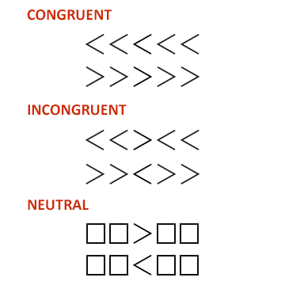

Example stimulus image (incongruent-left.png)
In this section, we're going to create a stimuli file and the corresponding stimuli to be used by our Executable, and make sure they're available in our Project.
A stimuli file represents the list of stimuli properties you'd like to use in your Executable. A stimulus can be anything from a single character, a word, a digit, an image, a video, or an audio file. Generally, as long as you can show or play the stimulus on a HTML page, it should be fine to use with Tatool. The stimuli file should be a CSV (comma-separated values) file.
In order for the CSV file to be used with Tatool, you should follow these conventions:
For the purpose of this tutorial, let's create a stimuli file for a Flanker Task. In this task, participants are asked to react to a central target (e.g., an arrow pointing either to the left or right) which is surrounded by flankers on each side (see figure below). The flankers are either congruent with the target (e.g., arrows pointing in the same direction as the target), incongruent with the target (e.g., arrows pointing in the opposite direction than the target), or neutral (e.g., squares instead of arrows). Participants are expected to respond slower to incongruent than neutral stimuli (interference effect), and faster to congruent than neutral stimuli (facilitation effect).

Example arrow stimuli
In our Flanker task, we'll present images of arrow Flanker stimuli as those shown above, and participants will have to indicate whether the central target arrow points to the left or the right. Every possible combination of the condition (congruent, incongruent, or neutral) and pointing direction (left or right) results in 6 images. You can create your own images or use the ones provided in your local Tatool installation.
Example stimulus image (incongruent-left.png)
For the stimuli file, we have to define four properties, the stimulusType, the stimulusValueType, the stimulusValue, and the correctResponse. The stimulusType refers to the condition reflected by the stimulus. For the stimulusValueType, we need to determine whether the stimulus is a text or an image. The stimulusValue refers to the specific stimulus such as the string or the image file name (e.g., 'A', 'congruent-left.png'). Finally, we have to define the correct response (correctResponse) in order to compare the response given by the user with the expected response to compute a score and to provide positive or negative feedback.
In our example, these four properties can take on the following values:
You can create your own stimuli file or use the example already provided in your local Tatool installation. The stimuli file you end up with should look similar to this:
stimulusType;stimulusValue;stimulusValueType;correctResponse
congruent;congruent-right.png;image;right
incongruent;incongruent-right.png;image;right
neutral;neutral-left.png;image;left
incongruent;incongruent-right.png;image;right
congruent;congruent-right.png;image;right
incongruent;incongruent-left.png;image;left
neutral;neutral-right.png;image;right
neutral;neutral-left.png;image;left
incongruent;incongruent-left.png;image;left
neutral;neutral-left.png;image;left
...
In order to use the images and the stimuli file in our Executable, they have to be located in the Project stimuli sub-folder (app/projects/public/myExperiment/stimuli) of the local Tatool installation. If you created your own files, make sure to copy/paste them to this folder.
As a next step, we're going to extend our basic Executable by reading the stimuli file and stimuli we've just created. To proceed, please go to Read Stimuli.